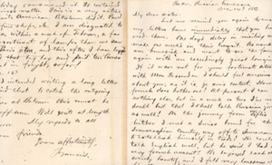
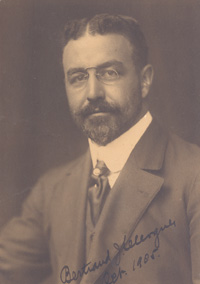
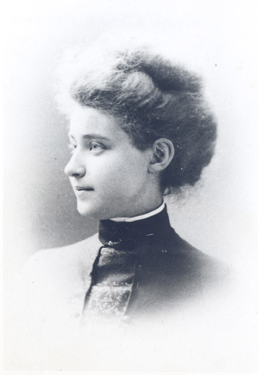
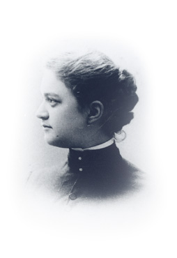
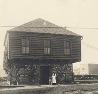
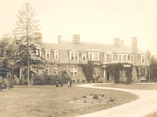
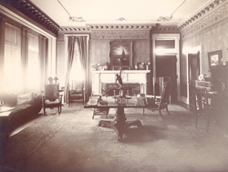

Home • Before Clergue • The Arrival • The Personality • Block House • Montfermier • Industrialization Process
Discovery Week • Collapse of the Empire • Rebirth • Clergue Letters
The Personality
Little is known about the personal life of Francis Hector Clergue. It is known that he was born on August 28, 1856 in Brewer, Maine, a small town across the Penobscot River from Bangor. After completing his high school education, he taught school for a year before entering the office of Fred M. Laughton of Bangor as a law clerk. Clergue later studied law at the University of Maine. He was called to the Bar in Maine in 1878. Even as a young law student, Clergue had the foresight to recognize what he wanted and to go after it with single-minded determination. When he failed to get the job he most wanted – a position in the office of Senator Hamlin in Washington, he moved on to plan "B" – a job with Laughton’s law firm and a second job with the Town of Bangor. Although it was not his original intention to enter into private practice, he soon found himself both a partner in the law firm of Laughton and Clergue and Town Counsel for the Town of Bangor. It was only a matter of time, however, before the lure of promotion and entrepreneurship enticed him first from the practice of law then from Bangor and finally from the United States.
Prior to coming to Sault Ste. Marie in 1894, Clergue had been involved in some fourteen entrepreneurial ventures, most of which were spectacular if only for their lack of financial success. Clergue was a man of thought and vision; for him, to think was to act. The financial implications of his actions were of only fleeting interest to him.
His first and only early success was the construction in 1880 of an electric street railway in Bangor while Clergue was the Town Counsel. Prior to embarking upon the construction of the electric street railway, Clergue consulted with Thomas Edison. Edison advised Clergue that an electric railway had been attempted only once before in the United States, at Richmond, Virginia and that the experiment had been unsuccessful. Clergue visited the site at Edison’s urging and spoke with the man responsible for the transformation of the street railway from one that was steam driven to one that was electrically powered. He found that the topography of Richmond was significantly different from that of Bangor and that it was the steep hills in Richmond that caused the electric engines to burn out with such frequency rendering the system both unreliable and expensive. Clergue described Bangor as being as flat as a tabletop and therefore able to sustain a street railway. He took the additional precaution of travelling to England to meet with the British and Swedish engineers who were constructing the electric cars to ensure they met the necessary specifications. This doesn’t mean that Clergue’s undertaking proceeded smoothly: some residents of Bangor opposed the project. They feared that a street railway would disturb the peace and quietude of the community. Technological advancement prevailed, however, and Bangor was serviced by an electrical streetcar system despite the objections of the few.
Using his widely touted powers of persuasion and the success of the street railway, Clergue convinced local industrialists who had invested in the street railway to similarly invest in an electrical power station on the Penobscot River just north of Bangor. Not only was the undertaking extremely expensive (said to be in the vicinity of more than half a million dollars with annual debt servicing of approximately $33,000) but its scale and proposed output far exceeded the needs of Bangor at the time. The debt repayment and debt servicing became so burdensome that within a very short period of time the original backers lost all of the money that they had invested. Despite the investment losses, the power plant continued to operate under the auspices of the Town of Bangor. The investors may have ended up with nothing in their pockets but Bangor acquired capital equipment, albeit in excess of their needs.
Undaunted by this set back, Clergue began investigating other potential investment opportunities. He settled on the development of a tourist destination consisting of cog railway /luxury resort complex on Mount Desert Island. Clergue knew that tourists from Bar Harbor, Maine hired buckboards to drive up Green Mountain on Desert Island. Tourists paid tolls to the owners of the carriage road and for the privilege of traveling to the top of the Mountain. Most stayed the night in the hotel at the summit or, at least, enjoyed a meal there before making the trip down to the base of the Mountain. Clergue’s intention was to expand upon this foundation. He raised $100,000 from backers that he used to purchase both the existing hotel and two hundred acres along the side of the Mountain. He proposed to transport tourists to Mount Desert Island from Bar Harbor by way of a ferry and from Annapolis, Nova Scotia by way of steamship. In order to accommodate the tourists who made the trip, Clergue and his backers constructed the Bluffs Hotel at the shipping terminus. They began construction of a cog railway up the side of Green Mountain (now known as Cadillac Mountain) in February, 1883 after sliding a railway charter through the state legislature. It was substantially complete by April of that year enabling photographers to take the first publicity and advertising shots. They modernized the existing hotel thereby completing the first stage in the proposed development of Mount Desert Island. Clergue celebrated the formal opening of the resort on 23 June 1883 with a two day gala party. During its first year of operation tourists poured in spending money on everything from tickets to meals to lodgings. Revenues were sufficient for the company to pay a six per cent dividend in its first year. Fuelled by this success, Clergue attempted to eliminate the competition created by the carriage road by dynamiting it. He then announced plans to construct an electric railroad in Bar Harbor. Summer residents were furious with his actions and cavalier attitude. They held a public hearing and subsequently hired former Vice President Hannibal Hamlin (the same man Clergue had applied to for employment several years before) to represent them legally. Clergue met his match in Hamlin and the railway was not constructed. As Bar Harbor became a year round community rather than merely a summer settlement, the tourist industry declined. The resort limped along for nine years after its first season. Finally, on 16 January 1893 the resort and all of its assets were sold at a sheriff’s sale. The tracks were removed and sold for scrap and the engine ended up in New Hampshire.
Mount Desert Island represented Clergue’s one and only foray into the field of resort promotion. Rather than let yet another failure deter him, though, he sought investment opportunities in still different directions. He built a pulp mill near Bangor, a project that was saved only by the actions of the investors: they proactively prevented him from having anything to do with the financial operation of the mill. His ability to charm money from New England investors appeared to have run its course after he failed to make a promised fortune for his backers by cutting ice on the Penobscot River during the winter months and then retailing it in New York and Philadelphia. Clergue had to look further afield for his financing. He traveled to London, England where he secured British backing for the construction of shipyards, a dry-dock and a bank at Mobile, Alabama. Again, his actions were plagued by a lack of success.
His most dramatic failure, however, came in 1888 when he announced that he had been granted permission to build a railway across Persia. He secured financing, again in England, this time in the amount of $25,000. He traveled to Persia where he proceeded to form three separate companies: the Persian Railway and Construction Company, the Persian Electric Light Company and the City of Tehran Water Works. Each of these companies had a capitalization of $1,000,000. Unfortunately for Clergue, he had not familiarized himself with the international relations between Persia and Russia before entering into negotiations with the Shah of Persia. Soon after he began the survey work associated with each of these three companies, the Russian government intervened and secured for itself the first right of refusal with respect to the construction of all railroads in Persia for a period of forty years. Clergue was frozen out of the construction project, losing the monies provided by his backers in the process.
 Letter from Clergue to his sister Helen 1888. Collection of the Sault Ste Marie Public Library Archives. |
His plans completely shattered, Clergue returned to Bangor where he tried his hand at mining speculation when western mining fever hit. Each of his ventures in this field failed but again Clergue was unfazed. He immediately went looking for money in his native Maine to divert the waters of the Penobscot River for the construction of a series of dams and power plants. His powers of persuasion failed to sway Maine investors and no amount of eloquent rhetoric could induce them to put money into yet another of his schemes. In order to maintain his position in the field of promotion, Clergue went to work for a group of Philadelphia financiers and investors, employment that brought him to Sault Ste. Marie in 1894.
Francis Hector Clergue was the son of Joseph Hector Clergue and Frances Clarissa Lombard Clergue. Joseph Hector was born on 20 March 1830 to Jean Clergue, an Ensign in the French Navy, and Marie Josephine Rolland Clergue. Joseph Hector’s father died when he was a year old. Marie Josephine subsequently remarried an event that reportedly induced Joseph Hector to leave home. He immigrated to the United States from Lorient, France as late as 1847. Frances, on the other hand, came from an old and established Maine family. Her parents, David Sawyer Lombard and Clara M. Lombard, both had roots in the United States that dated back to the seventeenth century. Frances’s father was a master shipbuilder of international renown. Joseph Hector and Frances met sometime after Joseph Hector settled in Bangor and they subsequently married. They made their home variously in Bangor and Brewer, communities separated only by the Penobscot River. The Clergue’s had at least six children who reached adulthood in addition to Francis Hector, namely: Bertrand Joseph, Ernest Victor, Helen, Grace E., Josephine C. and Gertrude Alice. Vital statistics for the City of Brewer indicate that there was another child, Mary B. Clergue, who was born 25 May 1866. Records for the City of Bangor confirm that Mary died at the age of one year and eight months on 20 January 1868. Coincidentally, her maternal grandfather, David Lombard died just one day later on 21 January 1868.
 Bertrand Clergue |
 Grace Clergue Harrison |
 Gertrude Clergue |
According to an unpublished biography of Clergue written by Alan Sullivan entitled Before the Tide, Clergue lived with Sullivan at Bishophurst, the residence of the Bishop for the Anglican Diocese of Algoma, during the fall and winter of 1894, immediately following his arrival in Sault Ste. Marie. Clergue could have lived elsewhere but he chose to live at Bishophurst at this early stage of his involvement in the community, so as to avoid socializing with local residents.
Despite the fact that Clergue’s outlook was both modern and forward-looking, he chose to restore and expand the Block House, the last remnant of the Hudson’s Bay Post, rather than to build or purchase a modern home when it came time to acquire his own living quarters. His youngest brother, Bertrand Joseph, a recent graduate of Boston Tech (now the Massachusetts Institute of Technology), joined Francis Hector at Sault Ste. Marie as early as 1894. Ernest Victor who had been a clerk in his brother’s law firm and then managed the Howard Clock Company in New York relocated to Sault Ste. Marie in or about 1899. When all three brothers resided in Sault Ste. Marie, Francis lived in the Block House, while his brothers boarded nearby at the Tagona Inn. Once Ernest assumed his position as supervisor of the Helen Mine at Michipicoten, Bertrand moved into the Block House with Francis.
 The Restored Block House |
 Clergue's residence, Montferier |
 Interior of Montferier |
Francis Hector Clergue decided to build a new and modern home after living in the Block House for a number of years. According to a weekly report submitted to A.J. Crane, Chief Engineer for the Lake Superior Corporation, by one of the assistant engineers in August of 1901: "I have in hand alterations to the plans sent by Mr. B.J. Clergue for a private residence." The site selected for the house, which was named Montfermier after the family’s ancestral home in France , was the brow of a Moffley Hill, an area that was outside the town limits both of Sault Ste. Marie and Steelton but overlooked both. From all accounts, it was a magnificent two storied structure surrounded by 20 acres of land that had been cleared for lawns and gardens. Excavation of the house began in the spring of 1902 and by the fall the red sandstone portion of the structure was complete. The second storey, according to contemporary reports was of "fancy wooden construction". All of the surviving members of Clergue’s family adopted Montfermier as their primary residence with the exception of the two sisters who married, Grace (Mrs. William Lynde Harrison married 12 November 1900) and Josephine (Mrs. Bernard Pol married 12 October 1876).
Francis Hector and Bertrand Joseph moved into the house around Christmas of 1902. Their parents and two of their sisters joined him in early 1903. Sadly, Ernest Victor died before the house was constructed.
Apparently never a robust man, Ernest local lore indicates that he strained his heart carrying a canoe over a long and arduous portage near Michipicoten. He went to Chicago for specialized medical treatment but died of heart failure while there. Ernest died intestate – without a will. His parents, Joseph Hector and Frances Clarissa both renounced all right and title to administer the estate instead naming their son, Bertrand Joseph, as administrator. Ernest was the beneficial owner of a number of lots in the Town of Sault Ste. Marie as well as in the Townships of Parke and Awenge. More importantly, however, he was the beneficial owner of mining claims, leases and properties held in trust for the Algoma Commercial Company Limited and the Lake Superior Power Company.
Although Francis Hector did not continue to live in the Sault after the collapse of the industrial empire he founded, his parents and sisters remained in Sault Ste. Marie until September of 1909 when Joseph Hector died. Responsibility for transporting Joseph Hector’s body back to Bangor for interment fell to Bertrand Joseph since Francis Hector was in Europe at the time of his father’s death. Presumably the entire family departed soon after Joseph Hector’s death since there is no further mention of them in locally held records.
By 1903 Clergue’s control over industrial development in Sault Ste. Marie had diminished significantly. He resigned as a director and as an employee of the Allied Companies in April of 1903 at the request of Speyer and Company, dramatically curtailing his role in corporate direction and management. For all intents and purposes, Clergue ceased to be a resident of Sault Ste. Marie at this time. He traveled extensively as a lobbyist before associating himself with the Canada Car and Foundry Company of Montreal. He acquired a residence in Montreal and made that city his new base of operations. He remained as the director of only one company he helped to found– the Algoma Commercial Company Limited – and even here his tenure was brief. As a director of the Algoma Commercial Company, he was a co-incorporator of the Land Improvement Company, a company created solely for the purpose of selling shares in the reorganized Lake Superior Corporation. In 1908 he failed to be reelected to the Board of the Lake Superior Corporation and he subsequently abandoned his interests in the Improvement Company. His ties with Sault Ste. Marie and local industry were severed for all time. Clergue returned to Sault Ste. Marie only twice - in August of 1923 for Discovery Week when he was invited to lay the cornerstone in the Cenotaph and again briefly in 1937 for a testimonial dinner in his honour.
After the collapse of his industrial empire, Clergue renewed his career as a promoter and entrepreneur. It was in connection with his promotional enterprises that he spent almost a year in Russia during which time he became friends with numerous important people, most notably Grand Duke Nicholas. He also travelled throughout the rest of Europe, often in the company of his brother, Bertrand. Following his return to Canada in 1910, Clergue renewed his association with the Canadian Car and Foundry Company of Montreal. It was in connection with this Company that Clergue found himself back in Europe – specifically France and Russia – in the years prior to the First World War. He sold patents to the governments of each of these countries for a universal transmission device for heavy gun turrets. In addition, Clergue secured two other contracts from the Russian Government: one for the sale of two million shells on behalf of the Canadian Car and Foundry Company and the other for the sale of three million shrapnel and high-explosive shells on behalf of himself. Clergue subsequently transferred his personal contract to the Canadian Car and Foundry Company despite the fact that the prices specified in this contract were much higher than the prices specified in the original contract as between the Government of Russia and the Canadian Car and Foundry Company. Given Clergue’s penchant for failure, it is hardly surprising that this enterprise, too, turned sour. First of all there was a major fire in the munitions plant where the shells were being produced and stored. Then, before the Company could be paid for the shells, the Government of Imperial Russia was overthrown. Needless to say, the failure of this particular contract could hardly be blamed on Clergue. There has been some suggestion, however, that despite the failure of the shell scheme, Clergue was paid $1.5 million in commissions (half in cash and half in Company stock) and that he subsequently received another $75,000 for services rendered. In January of 1920, Clergue was elected as a director of the Canada Car and Foundry Company and within a matter of weeks of his election he was appointed to the executive committee of the Company. He held both of these positions until his death. In addition, Clergue was the president of his own engineering company, the Universal Engineering Corporation. It would appear that he didn’t embark on any further great schemes after the First World War but rather devoted his time to Canada Car and Universal Engineering.
Francis Hector Clergue died in Montreal on January 19,1939 at the age of 82 years. According to an article which appeared in the Globe and Mail, he was taken to hospital three days after suffering a heart attack. He rallied briefly but then died within a matter of days. His sister, Gertrude, who was living with him at the time of his death, continued to live in the house they shared on Mountain Road in Montreal. His parents predeceased Clergue. Joseph Hector, as mentioned above, died in 1909 and Frances Clarissa died in 1912 in New York, presumably while at the home of her daughter, Josephine. He was also predeceased by his brother, Ernest Victor who died in January, 1902 in Chicago, Illinois while in the employ of his brother’s mining operations, by his brother Bertrand Joseph who died in Waterbury, Connecticut in March of 1930 also while engaged in business for Francis Hector and his sister Helen who died in England in May of 1938. Interestingly enough, all of these family members were buried in a lot in Mt. Hope Cemetery in Bangor, which Francis Hector purchased in 1902.